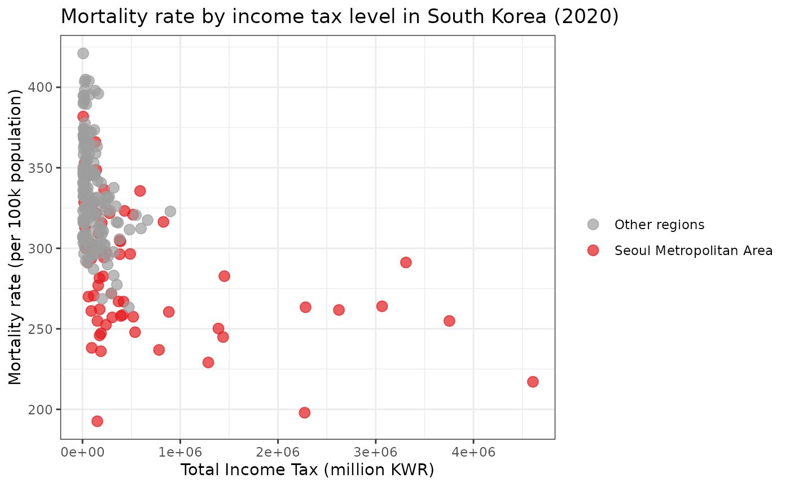
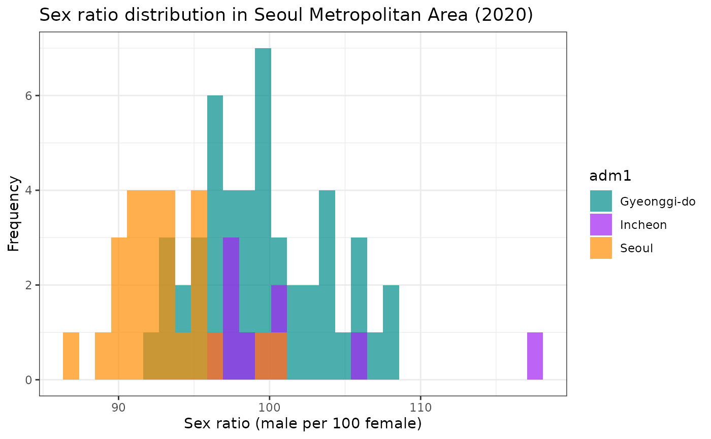
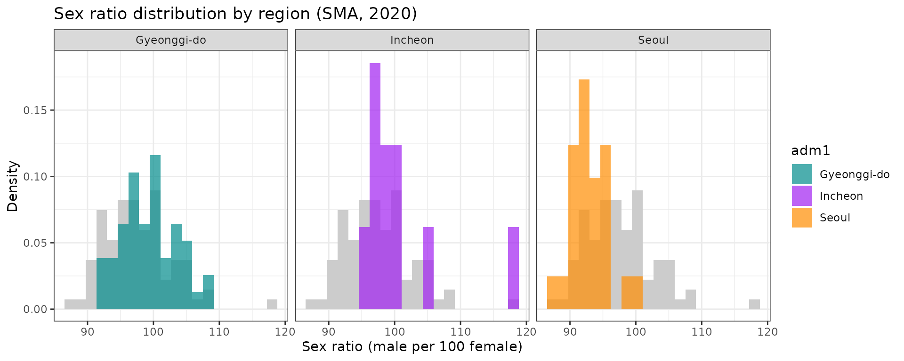
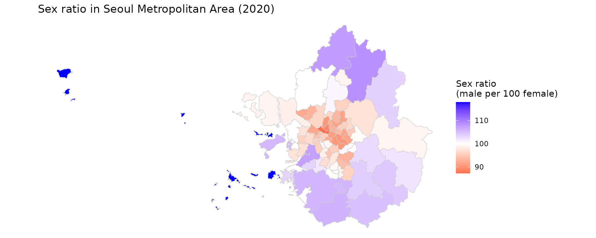
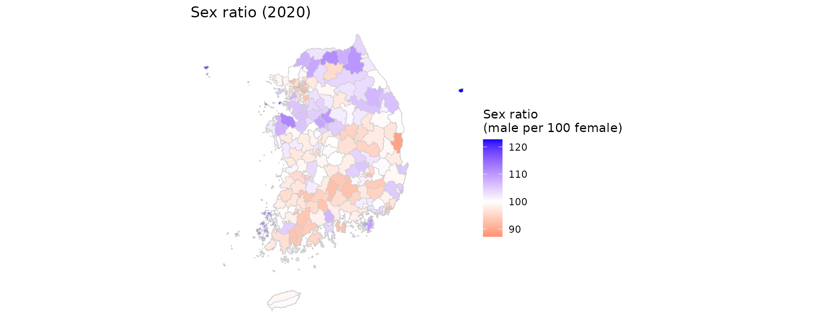
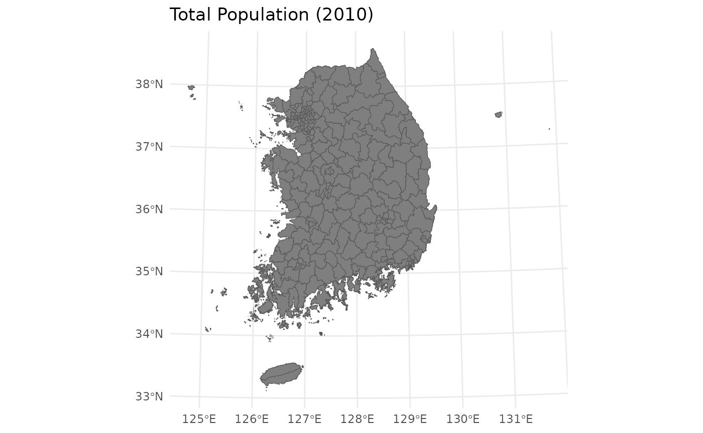
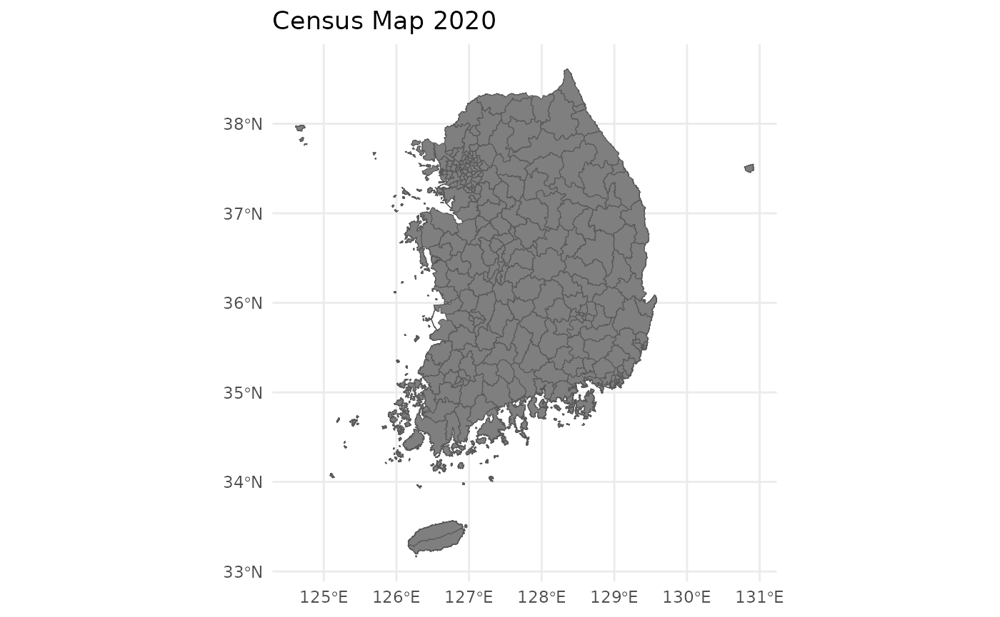

Examples with ggplot2
August 14, 2025
Source:vignettes/v02_examples_with_ggplot.Rmd
v02_examples_with_ggplot.RmdLoad Data
You can use the censuskor dataset and spatial data for
different years. Here, we will load the census data and the spatial data
for 2010, 2015, and 2020. load_districts() is a function
that retrieves the spatial data for the specified year.
Plot 1: Income vs Mortality
df_wide <-
df_wide %>%
mutate(Seoul = if_else(adm1 %in% c("Seoul", "Incheon", "Gyeonggi-do"), 1L, 0L))
ggplot(df_wide, aes(x = labor, y = mortality)) +
geom_point(aes(color = factor(Seoul)), size = 3, alpha = 0.7) +
scale_color_manual(
values = c("0" = "#9E9E9E", "1" = "#E41A1C"),
labels = c("Other regions", "Seoul Metropolitan Area"),
name = NULL
) +
labs(
title = "Mortality rate by income tax level in South Korea (2020)",
x = "Total Income Tax (million KWR)",
y = "Mortality rate (per 100k population)"
) +
theme_bw()## Warning: Removed 37 rows containing missing values or values outside the scale range
## (`geom_point()`).
Plot 2
Plot 2-1: Sex Ratio Distribution in SMA
df_wide_seoul <-
df_wide %>%
filter(Seoul == 1) %>%
mutate(sex_ratio = male / female * 100)
ggplot(df_wide_seoul, aes(x = sex_ratio, fill = adm1)) +
geom_histogram(alpha = 0.7, position = "identity", bins = 30) +
scale_fill_manual(values = c("Seoul" = "darkorange", "Incheon" = "purple", "Gyeonggi-do"="cyan4")) +
labs(
x = "Sex ratio (male per 100 female)",
y = "Frequency",
title = "Sex ratio distribution in Seoul Metropolitan Area (2020)"
) +
theme_bw()
Plot 2-2: Sex Ratio Distribution in SMA 2
bg_all <- df_wide_seoul %>% select(sex_ratio)
ggplot() +
# 1) background distribution
geom_histogram(
data = bg_all, aes(x = sex_ratio, y = after_stat(density)),
bins = 20, fill = "grey80", color = NA
) +
# 2) regional distribution
geom_histogram(
data = df_wide_seoul, aes(x = sex_ratio, y = after_stat(density), fill = adm1),
bins = 20, alpha = 0.7, color = NA, position = "identity"
) +
facet_wrap(~ adm1, ncol = 3) +
scale_fill_manual(values = c(
"Seoul" = "darkorange", "Incheon" = "purple", "Gyeonggi-do"= "cyan4")) +
labs(
title = "Sex ratio distribution by region (SMA, 2020)",
x = "Sex ratio (male per 100 female)",
y = "Density"
) +
theme_bw()
Plot 3: choropleth map
adm2_sf_2020 <- load_districts(year = 2020)
adm2_sf_2020_seoul <- adm2_sf_2020 %>% inner_join(df_wide_seoul, by = "adm2_code")
ggplot(adm2_sf_2020_seoul) +
geom_sf(aes(fill = sex_ratio), color = "gray80") +
theme_void() +
scale_fill_gradient2(
low = "red", mid = "white", high = "blue",
midpoint = 100,
name = "Sex ratio\n(male per 100 female)"
) +
labs(
title = "Sex ratio in Seoul Metropolitan Area (2020)",
color = "ADM1"
)
adm2_sf_2020 <- load_districts(year = 2020)
adm2_sf_2020_kr <- adm2_sf_2020 %>%
inner_join(df_wide, by = "adm2_code") %>%
mutate(sex_ratio = male / female * 100)
ggplot(adm2_sf_2020_kr) +
geom_sf(aes(fill = sex_ratio), color = "gray80") +
theme_void() +
scale_fill_gradient2(
low = "red", mid = "white", high = "blue",
midpoint = 100,
name = "Sex ratio\n(male per 100 female)"
) +
labs(
title = "Sex ratio (2020)",
color = "ADM1"
)
Plot 4: Mapping total population in all districts
Filter and Merge Data
# Load spatial data for 2010, 2015, and 2020
sf_2010 <- load_districts(year = 2010)
sf_2015 <- load_districts(year = 2015)
sf_2020 <- load_districts(year = 2020)
# Filter censuskor data
population_2010 <- censuskor %>%
filter(year == 2010, type == "population", class1 == "total", class2 == "total")
population_2015 <- censuskor %>%
filter(year == 2015, type == "population", class1 == "total", class2 == "total")
population_2020 <- censuskor %>%
filter(year == 2020, type == "population", class1 == "total", class2 == "total")
# Merge with spatial data
sf_2010_merged <- sf_2010 %>%
left_join(population_2010, by = "adm2_code")
sf_2015_merged <- sf_2015 %>%
left_join(population_2015, by = "adm2_code")
sf_2020_merged <- sf_2020 %>%
left_join(population_2020, by = "adm2_code")Create Maps
value field is a universal field in the
censuskor dataset that contains the data values. You can
use this field to create maps for each year.
# Palette
fill_cols <- c("#F8B195", "#F67280", "#C06C84", "#6C5B7B", "#355C7D")
# Map for 2010
map_2010 <- ggplot(data = sf_2010_merged) +
geom_sf(aes(fill = value)) +
labs(title = "Total Population (2010)") +
scale_fill_gradientn(colors = fill_cols) +
theme_minimal()
# Map for 2015
map_2015 <- ggplot(data = sf_2015_merged) +
geom_sf(aes(fill = value)) +
labs(title = "Census Map 2015") +
scale_fill_gradientn(colors = fill_cols) +
theme_minimal()
# Map for 2020
map_2020 <- ggplot(data = sf_2020_merged) +
geom_sf(aes(fill = value)) +
labs(title = "Census Map 2020") +
scale_fill_gradientn(colors = fill_cols) +
theme_minimal()
# Print maps
map_2010
map_2015
map_2020